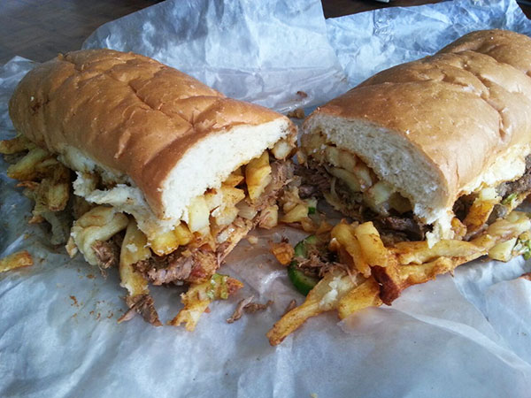
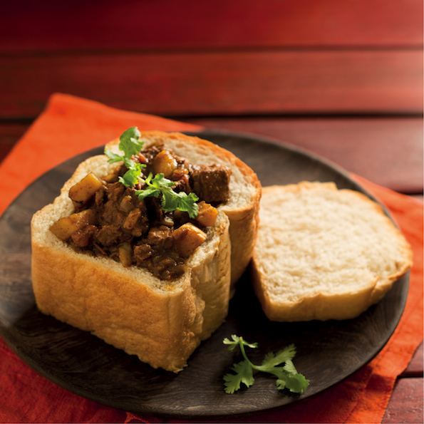
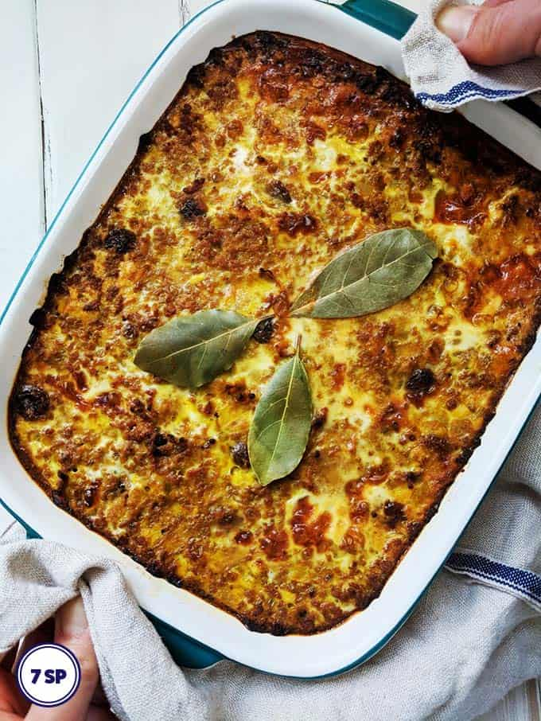
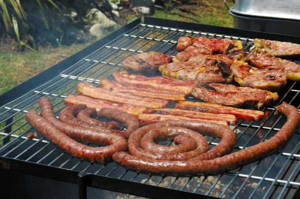
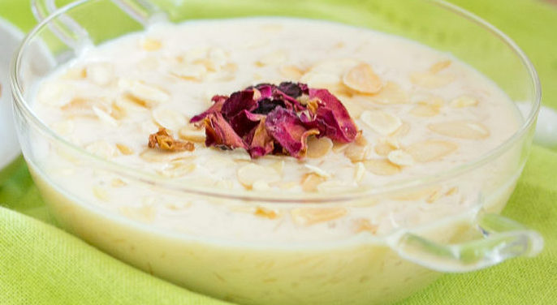
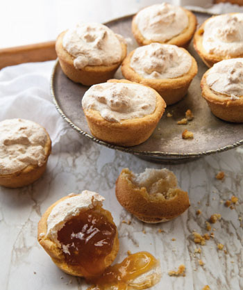
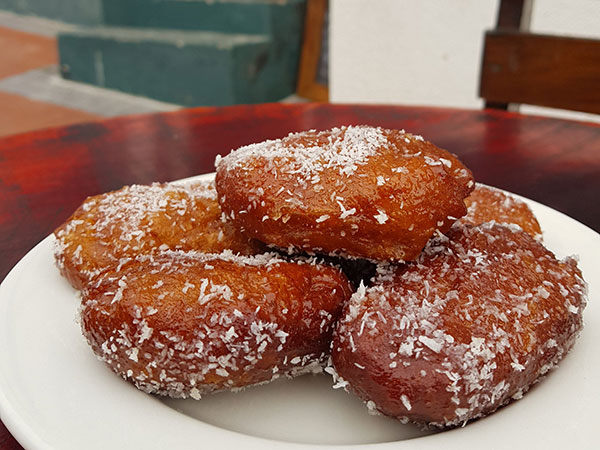

Capetonian gatsby's originated in the Cape Flats and dates back to the mid 1970's. It is a large submarine style sandwich that comes with various fillings.It is crammed full of a variety of meat, chips and sauces and is almost impossible to finish because of its size. Gatsby's began in 1976 when the owner of a fish based shop in Athlone named Rashaad Pandy, had nothing to feed a few workers who was helping him clean. He combined what he had which was a round Portugese roll,polony, slap chips and atchar.
Bunny Chow is a classic South African meal that draws on the country's Indian influence. It is essentially half a loaf of hollowed out bread filled with curry.
Bobotie is a Cape Malay creation consisting of minced beef topped with a custard of milk and eggs. It is a fragrant dish flavoured with spices and dried fruit.
Braai is a South African traditional barbecue with a few local twists.Braai meat include boerewors, beef steak, and pork or lamb chops.
Boeber is a comforting Cape Malay dessert consisting of vermicelli, milk, rose water,cinnamon and cardamom. It can also contain sago which thickens the milk delightfully.
Hertzoggies are a cross between a little tart and a biscuit. It is filled with apricot jam and desicated coconut.
Koesisters is a genius Cape Malay invention with an incredible light and fluffy yeasted dough. It is delicately spiced with notes of cardamom and dried ginger. It is dunked in syrup and sprinkled with desicated coconut.
Sago pudding is simple yet decadent. Sago is cooked in milk whick is flavoured with cinnamon and vanilla.